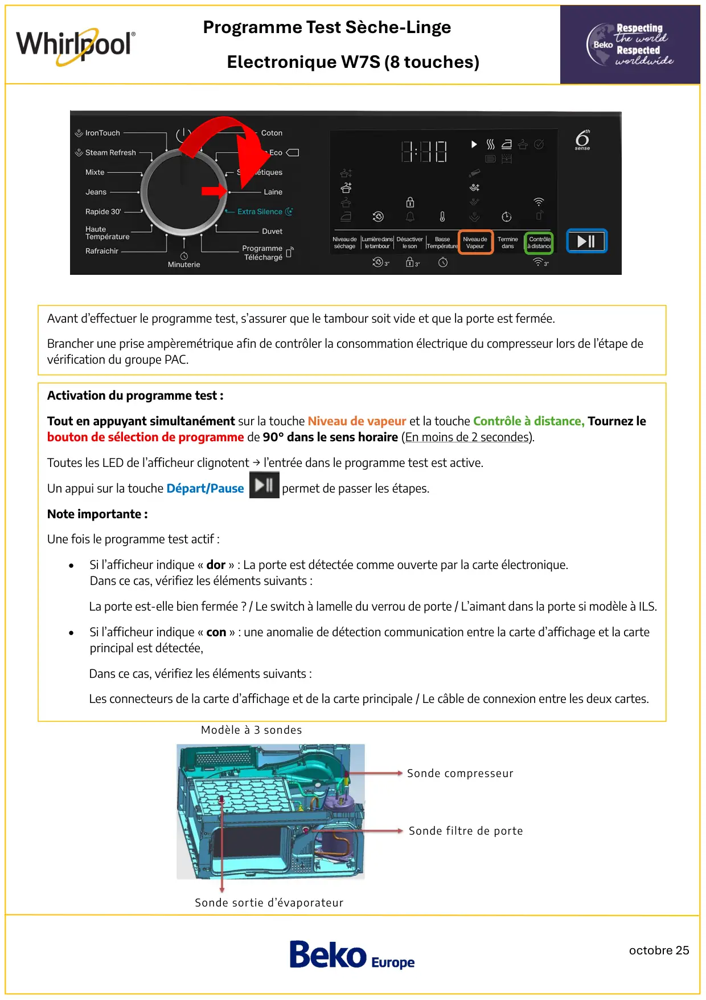
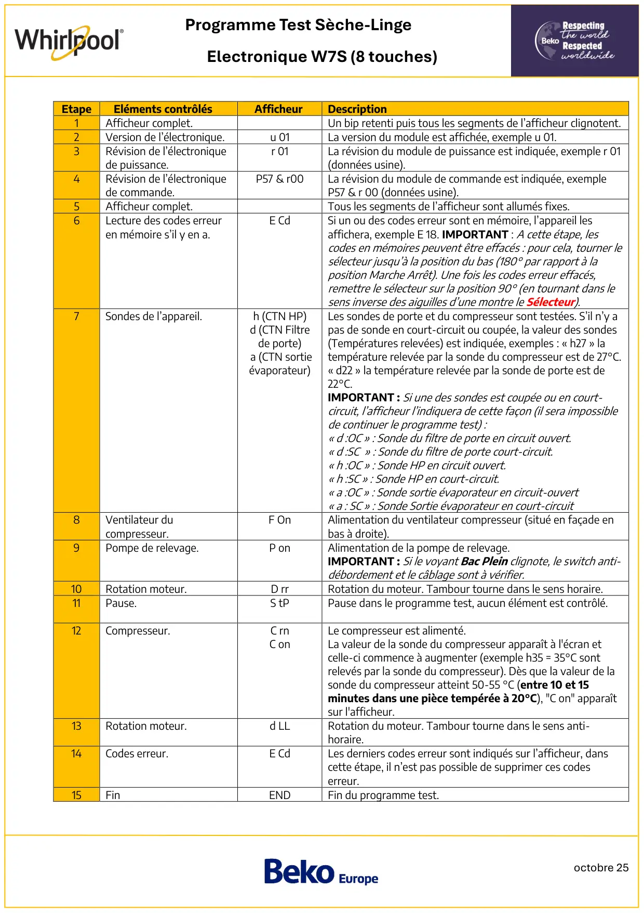
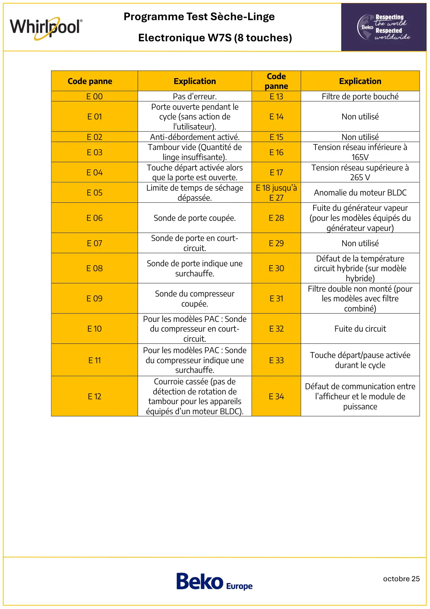

ProgTest seche linge PAC Whirlpool ElectroniqueW7S 8touches sans barette humidité

octobre 25Programme Test Sèche-LingeElectronique W7S (8 touches)Activation du programme test :Tout en appuyant simultanément sur la touche Niveau de vapeur et la touche Contrôle à distance, Tournez lebouton de sélection de programme de 90° dans le sens horaire (En moins de 2 secondes).Toutes les LED de l’afficheur clignotent → l’entrée dans le programme test est active.Un appui sur la touche Départ/Pause permet de passer les étapes.Note importante :Une fois le programme test actif :•Si l’afficheur indique « dor » : La porte est détectée comme ouverte par la carte électronique.Dans ce cas, vérifiez les éléments suivants :La porte est-elle bien fermée ? / Le switch à lamelle du verrou de porte / L’aimant dans la porte si modèle à ILS.•Si l’afficheur indique « con » : une anomalie de détection communication entre la carte d’affichage et la carteprincipal est détectée,Dans ce cas, vérifiez les éléments suivants :Les connecteurs de la carte d’affichage et de la carte principale / Le câble de connexion entre les deux cartes.Avant d’effectuer le programme test, s’assurer que le tambour soit vide et que la porte est fermée.Brancher une prise ampèremétrique afin de contrôler la consommation électrique du compresseur lors de l’étape devérification du groupe PAC.Sonde compresseurSonde filtre de porteSonde sortie d’évaporateurModèle à 3 sondes
1 / 3
octobre 25Programme Test Sèche-LingeElectronique W7S (8 touches)EtapeEléments contrôlésAfficheurDescription1Afficheur complet.Un bip retenti puis tous les segments de l’afficheur clignotent.2Version de l’électronique.u 01La version du module est affichée, exemple u 01.3Révision de l’électroniquede puissance.r 01La révision du module de puissance est indiquée, exemple r 01(données usine).4Révision de l’électroniquede commande.P57 & r00La révision du module de commande est indiquée, exempleP57 & r 00 (données usine).5Afficheur complet.Tous les segments de l’afficheur sont allumés fixes.6Lecture des codes erreuren mémoire s’il y en a.E CdSi un ou des codes erreur sont en mémoire, l’appareil lesaffichera, exemple E 18. IMPORTANT : A cette étape, lescodes en mémoires peuvent être effacés : pour cela, tourner lesélecteur jusqu’à la position du bas (180° par rapport à laposition Marche Arrêt). Une fois les codes erreur effacés,remettre le sélecteur sur la position 90° (en tournant dans lesens inverse des aiguilles d’une montre le Sélecteur).7Sondes de l’appareil.h (CTN HP)d (CTN Filtrede porte)a (CTN sortieévaporateur)Les sondes de porte et du compresseur sont testées. S’il n’y apas de sonde en court-circuit ou coupée, la valeur des sondes(Températures relevées) est indiquée, exemples : « h27 » latempérature relevée par la sonde du compresseur est de 27°C.« d22 » la température relevée par la sonde de porte est de22°C.IMPORTANT : Si une des sondes est coupée ou en court-circuit, l’afficheur l’indiquera de cette façon (il sera impossiblede continuer le programme test) :« d :OC » : Sonde du filtre de porte en circuit ouvert.« d :SC » : Sonde du filtre de porte court-circuit.« h :OC » : Sonde HP en circuit ouvert.« h :SC » : Sonde HP en court-circuit.« a :OC » : Sonde sortie évaporateur en circuit-ouvert« a : SC » : Sonde Sortie évaporateur en court-circuit8Ventilateur ducompresseur.F OnAlimentation du ventilateur compresseur (situé en façade enbas à droite).9Pompe de relevage.P onAlimentation de la pompe de relevage.IMPORTANT : Si le voyant Bac Plein clignote, le switch anti-débordement et le câblage sont à vérifier.10Rotation moteur.D rrRotation du moteur. Tambour tourne dans le sens horaire.11Pause.S tPPause dans le programme test, aucun élément est contrôlé.12Compresseur.C rnC onLe compresseur est alimenté.La valeur de la sonde du compresseur apparaît à l'écran etcelle-ci commence à augmenter (exemple h35 = 35°C sontrelevés par la sonde du compresseur). Dès que la valeur de lasonde du compresseur atteint 50-55 °C (entre 10 et 15minutes dans une pièce tempérée à 20°C), "C on" apparaîtsur l'afficheur.13Rotation moteur.d LLRotation du moteur. Tambour tourne dans le sens anti-horaire.14Codes erreur.E CdLes derniers codes erreur sont indiqués sur l’afficheur, danscette étape, il n’est pas possible de supprimer ces codeserreur.15FinENDFin du programme test.
2 / 3
octobre 25Programme Test Sèche-LingeElectronique W7S (8 touches)Code panneExplicationCodepanneExplicationE 00Pas d’erreur.E 13Filtre de porte bouchéE 01Porte ouverte pendant lecycle (sans action del'utilisateur).E 14Non utiliséE 02Anti-débordement activé.E 15Non utiliséE 03Tambour vide (Quantité delinge insuffisante).E 16Tension réseau inférieure à165VE 04Touche départ activée alorsque la porte est ouverte.E 17Tension réseau supérieure à265 VE 05Limite de temps de séchagedépassée.E 18 jusqu’àE 27Anomalie du moteur BLDCE 06Sonde de porte coupée.E 28Fuite du générateur vapeur(pour les modèles équipés dugénérateur vapeur)E 07Sonde de porte en court-circuit.E 29Non utiliséE 08Sonde de porte indique unesurchauffe.E 30Défaut de la températurecircuit hybride (sur modèlehybride)E 09Sonde du compresseurcoupée.E 31Filtre double non monté (pourles modèles avec filtrecombiné)E 10Pour les modèles PAC : Sondedu compresseur en court-circuit.E 32Fuite du circuitE 11Pour les modèles PAC : Sondedu compresseur indique unesurchauffe.E 33Touche départ/pause activéedurant le cycleE 12Courroie cassée (pas dedétection de rotation detambour pour les appareilséquipés d’un moteur BLDC).E 34Défaut de communication entrel’afficheur et le module depuissance
3 / 3